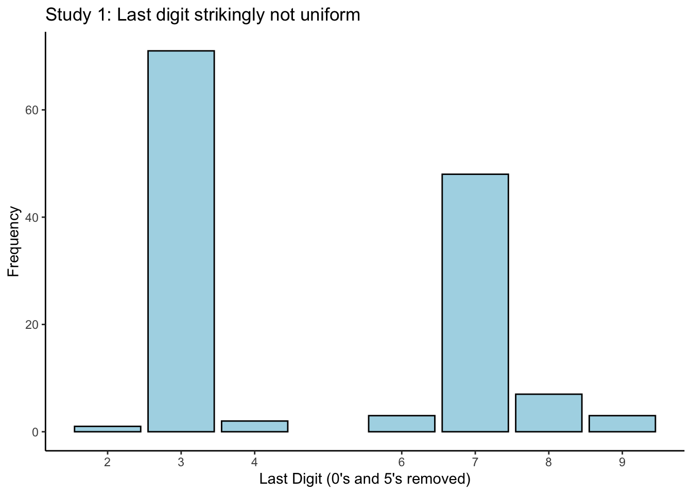
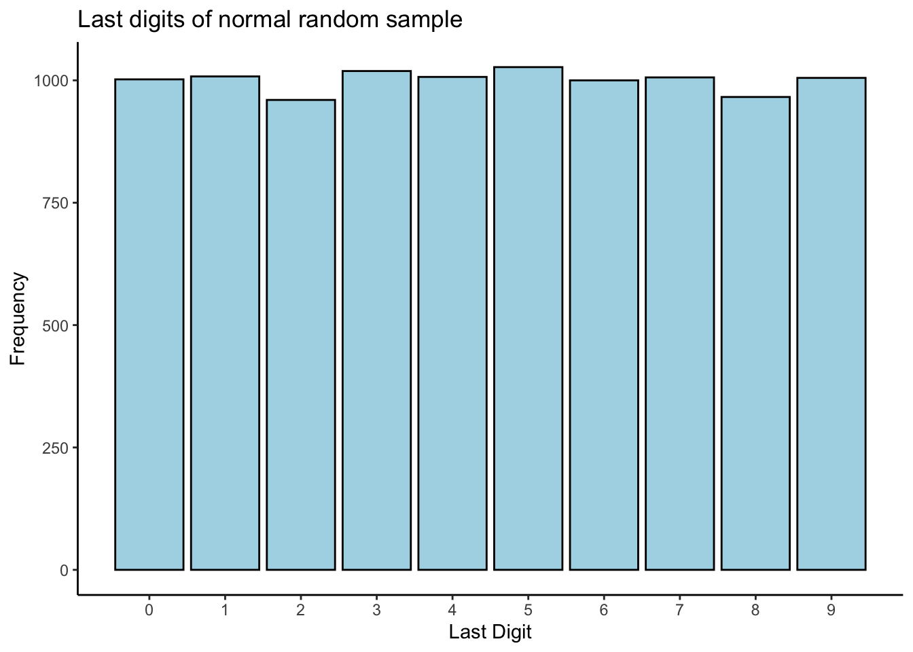

Chapter 10 Extended Example: Reasoning About Goodness of Fit
This chapter is a bit different: we introduce the idea of “goodness of fit” through implementing the analysis in a blog post discussing a disputed paper in a Psychology journal. You can find the article here: http://datacolada.org/74
10.1 Go and read the blog post
To start, go read this blog post: http://datacolada.org/74. This should take you at least an hour or so to do in detail, if not longer. It is a major part of this week’s materials, effectively replacing textbook readings. It is not optional, and will be tested on assignments and tests.
Exercise: summarize this study in your own words. Two or three sentences should suffice. What did they do, how did they do it, and what were they trying to find out? It is important that you understand this before you move on.
10.2 Distribution of last digits
The distribution of digits in numeric data is of considerable interest in certain fields. In forensic accounting, where investigators try to identify fraudulent accounting practice by identifying systematic anomalies in financial records, the relative frequency with which different digits occur can indicate potential fraud if it differs from what you would expect. It is well-established that the last digit, in particular, of numeric data should be distributed pretty evenly between the numbers \(0 - 9\) in any given set of data.
So, let’s look at the last digit of the measurements from the hand sanitizer study.
The data is available from http://datacolada.org/appendix/74/ and their R code can be found at http://datacolada.org/appendix/74/74%20-%20DataColada%20-%20Decoy%20Sanitizer%20-%202018%2008%2023.R. Here we
use our own R code but I borrow parts from theirs.
10.2.1 Read in the data
First, read in the data as usual:
study1 <- readr::read_csv(
file = "http://datacolada.org/appendix/74/Study%201%20-%20Decoy%20Effect.csv",
col_names = TRUE,
col_types = stringr::str_c(rep("n",42),collapse = "")
)
glimpse(study1)## Observations: 40
## Variables: 42
## $ Subject <dbl> 1, 2, …
## $ `Group (1=experimental condition, 0 = control condition)` <dbl> 1, 1, …
## $ Day1 <dbl> 55, 60…
## $ Day2 <dbl> 45, 55…
## $ Day3 <dbl> 45, 55…
## $ Day4 <dbl> 40, 55…
## $ Day5 <dbl> 45, 50…
## $ Day6 <dbl> 45, 45…
## $ Day7 <dbl> 55, 45…
## $ Day8 <dbl> 60, 40…
## $ Day9 <dbl> 45, 40…
## $ Day10 <dbl> 67, 40…
## $ Day11 <dbl> 65, 56…
## $ Day12 <dbl> 70, 40…
## $ Day13 <dbl> 80, 40…
## $ Day14 <dbl> 75, 45…
## $ Day15 <dbl> 70, 50…
## $ Day16 <dbl> 80, 55…
## $ Day17 <dbl> 70, 55…
## $ Day18 <dbl> 75, 50…
## $ Day19 <dbl> 70, 45…
## $ Day20 <dbl> 65, 50…
## $ `Day21 (Beginning of intervention)` <dbl> 85, 55…
## $ Day22 <dbl> 85, 75…
## $ Day23 <dbl> 90, 45…
## $ Day24 <dbl> 85, 60…
## $ Day25 <dbl> 75, 50…
## $ Day26 <dbl> 75, 50…
## $ Day27 <dbl> 65, 35…
## $ Day28 <dbl> 75, 55…
## $ Day29 <dbl> 75, 60…
## $ Day30 <dbl> 80, 55…
## $ Day31 <dbl> 75, 65…
## $ Day32 <dbl> 50, 45…
## $ Day33 <dbl> 70, 40…
## $ Day34 <dbl> 75, 55…
## $ Day35 <dbl> 65, 55…
## $ Day36 <dbl> 75, 60…
## $ Day37 <dbl> 70, 50…
## $ Day38 <dbl> 75, 45…
## $ Day39 <dbl> 90, 65…
## $ Day40 <dbl> 85, 70…Exercise: download the data by pasting the link into a web browser.
Print out the header on the command line or open the .csv file in Excel or
otherwise. Verify that the col_names and col_types arguments I provided
are correct.
The data is in “wide” format– each day has its own column. We want one column for subject ID, one for Day, and one for measurement. Let’s reformat the data:
## Observations: 1,600
## Variables: 4
## $ Subject <dbl> 1, 2, …
## $ `Group (1=experimental condition, 0 = control condition)` <dbl> 1, 1, …
## $ day <chr> "Day1"…
## $ measurement <dbl> 55, 60…We previously had \(40\) subjects each with \(40\) columns of measurements; now we have \(1,600\) rows, which looks good to me. Let’s further clean up the data: we need to
- Rename the colums so they are pleasant (yes, this is important!),
- Extract the last digit of each measurement and save it in a new column.
Let’s do this. We’ll use the substr function to choose the last digit of each
number. Type ?substr to learn about this function.
study1_clean <- study1_long %>%
rename(subject = Subject,
group = `Group (1=experimental condition, 0 = control condition)`) %>%
mutate(last_digit = as.numeric(substr(measurement,nchar(measurement),nchar(measurement))))
glimpse(study1_clean)## Observations: 1,600
## Variables: 5
## $ subject <dbl> 1, 2, 3, 4, 5, 6, 7, 8, 9, 10, 11, 12, 13, 14, 15, 1…
## $ group <dbl> 1, 1, 1, 1, 1, 1, 1, 1, 1, 1, 1, 1, 1, 1, 1, 1, 1, 1…
## $ day <chr> "Day1", "Day1", "Day1", "Day1", "Day1", "Day1", "Day…
## $ measurement <dbl> 55, 60, 63, 55, 60, 60, 35, 55, 45, 75, 50, 70, 60, …
## $ last_digit <dbl> 5, 0, 3, 5, 0, 0, 5, 5, 5, 5, 0, 0, 0, 0, 5, 0, 0, 0…Looks clean to me!
10.2.2 Make the histogram
Okay, now consider Figure 1 in the blog post. They filter out observations not ending in \(0\) or \(5\), because the authors of the disputed paper claim to have occasionally used a scale with \(5\)-gram precision, and occasionally one with \(1\)-gram precision (this alone is suspect…). They then make a histogram of all the last digits. We can do this too:
study1_clean %>%
filter(!(last_digit %in% c(0,5))) %>%
ggplot(aes(x = last_digit)) +
theme_classic() +
geom_bar(stat = "count",colour = "black",fill = "lightblue") +
scale_x_continuous(breaks = c(1,2,3,4,6,7,8,9),labels = c(1,2,3,4,6,7,8,9)) +
labs(title = "Study 1: Last digit strikingly not uniform",
x = "Last Digit (0's and 5's removed)",
y = "Frequency")
I called this plot a “histogram” (which it is), but I used geom_bar(stat = "count") to create
it. I did this because I wanted the bins to be at specific values. It’s still a histogram (why?).
10.2.3 Testing goodness of fit: simulation
If you expect the last digits of a set of numbers to be evenly-distributed across the values \(0 - 9\), then this plot might look surprising. But can we conclude that something is wrong, just by looking at a plot? What if the real underlying distribution of digits is actually evenly-distributed, and we just got a weird sample– we’d be making an incorrect harsh judgement.
We’re going to ask the question: if the underlying distribution of last digits really was evenly distributed, what is the probability of seeing the data that we saw, or a dataset that is even more extreme under this hypothesis?.
That’s a mouthful! But it’s a good question to ask. If it’s really, really unlikely that we see what we saw (or something even further) if the claim of even distribution is true, then this provides evidence against the notion that the digits are actually evenly distributed. And this provides evidence that there is something funny in the data.
We are going to do a simulation to investigate this claim. We are going to
- Generate a bunch of datasets the same size as ours but where the distribution of the last digit actually is evenly distributed across \(0 - 9\), and
- Record the proportion of digits in each that are \(3\) or \(7\), and
- Compute the proportion of our simulated datasets that have a proportion of 3’s or 7’s as high, or higher, as what we saw in our sample.
There are a few details that we can’t get exactly right here: the real data was generated by sampling a bunch of values that ended in \(0's\) or \(5's\) and then filtering these out, which is behaviour that I don’t know how to replicate exactly. We also could consider the distribution of \(3's\) and \(7's\) separately, or jointly (using “and” instead of “or”). I order to keep this idea simple and big-picture, we’re going to ignore these details here.
The first question is, how do we generate data that has last digits evenly distributed? Well, any random numbers should work, but to keep things consistent with the real data, let’s try generating from a normal distribution with mean and variance equal to the sample mean and variance of our data, rounded to the nearest integer:
mn <- mean(study1_clean$measurement)
ss <- sd(study1_clean$measurement)
testnumbers <- round(rnorm(10000,mn,ss))
# Plot a chart of the last digits
tibble(x = testnumbers) %>%
mutate(last_digit = as.numeric(substr(x,nchar(x),nchar(x)))) %>%
ggplot(aes(x = last_digit)) +
theme_classic() +
geom_bar(stat = "count",colour = "black",fill = "lightblue") +
scale_x_continuous(breaks = c(0,1,2,3,4,5,6,7,8,9),labels = c(0,1,2,3,4,5,6,7,8,9)) +
labs(title = "Last digits of normal random sample",
x = "Last Digit",
y = "Frequency")
Looks pretty uniform to me! Let’s proceed with our simulation:
set.seed(789685)
# Create a function that simulates a dataset
# and returns the proportion of last digits
# that are either 3 or 7
N <- nrow(study1_clean %>% filter(!(last_digit %in% c(5,0)))) # Size of dataset to simulate
B <- 1e04 # Number of simulations to do- 1 million (!)
mn <- mean(study1_clean$measurement)
ss <- sd(study1_clean$measurement)
simulate_proportion <- function() {
ds <- round(rnorm(N,mn,ss))
last_digits <- substr(ds,nchar(ds),nchar(ds))
mean(last_digits %in% c("3","7"))
}
# What is the proportion of 3's and 7's in our data,
# after filtering out 5's and 0's?
study_proportion <- study1_clean %>%
filter(!(last_digit %in% c(5,0))) %>%
summarize(p = mean(last_digit %in% c(3,7))) %>%
pull(p)
study_proportion## [1] 0.8814815# 88.1%. Wow.
# Perform the simulation:
sim_results <- 1:B %>%
map(~simulate_proportion()) %>%
map(~as.numeric(.x >= study_proportion)) %>%
reduce(c)
# This is a vector of 0/1 which says whether each simulation's proportion of
# 3's and 7's exceeded the study proportion. Its mean is the simulated probability
# of seeing what we saw in the study, if the digits are actually evenly distributed:
mean(sim_results)## [1] 0## [1] 0In \(B = 10,000\) simulations, I didn’t even get a single dataset that was as extreme as ours. This provides strong evidence against the notion that the digits are, in fact, evenly distributed.
Exercise: how many simulations do you need before you get even one that is as extreme as our dataset?
10.2.4 Testing goodness of fit: math
We may also use mathematics and statistical modelling to answer the question: if the underlying distribution of last digits really was evenly distributed, what is the probability of seeing the data that we saw, or a dataset that is even more extreme under this hypothesis?.
We do this in a clever way: we construct a statistical model that represents the truth, if the truth is what we say it is. Namely, we will define a probability distribution that should represent the distribution of the last digits of our measurements, if the last digits are evenly distributed. We then see how probable our data is under this model. If, under this model, it is very unlikely to see a dataset like ours, then this provides evidence that the model isn’t representative of the truth. And since the model was built under the premise that the digits are evenly distributed, a lack of fit of the model to the observed data provides evidence against the notion that the digits are evenly distributed.
Let’s develop a model. Define \(y_{ij} = 1\) if the last digit of the \(i^{th}\) measurement equals \(j\), for \(j \in J = \left\{1,2,3,4,6,7,8,9\right\}\), and equals \(0\) otherwise. So for example, if the \(i^{th}\) measurement is \(42\) then \(y_{i1} = 0\) and \(y_{i2} = 1\) and \(y_{i3} = 0\) and so on. Define \(y_{i} = (y_{i1},\ldots,y_{i9})\), a vector containing all zeroes except for exactly one \(1\). Then the \(y_{i}\) are independent draws from a Multinomial distribution, \(y_{i}\overset{iid}{\sim}\text{Multinomial}(1,p_{1},\ldots,p_{9})\), with \(\mathbb{E}(y_{ij}) = \mathbb{P}(y_{ij} = 1) = p_{j}\) and \(\sum_{j\in J}p_{j} = 1\). The vectors \(y_{i}\) have the following (joint) density function: \[\begin{equation} \mathbb{P}(y_{i} = (y_{i1},\ldots,y_{i9})) = p_{1}^{y_{i1}}\times\cdots\times p_{9}^{y_{i9}} \end{equation}\] The multinomial is the generalization of the binomial/bernoulli to multiple possible outcomes on each trial. If the bernoulli is thought of as flipping a coin (two possible outcomes), then the multinomial should be thought of as rolling a die (six possible outcomes).
How does this help us answer the question? If the digits are actually evenly distributed, then this means \(p_{1} = \cdots = p_{9} = 1/8\) (why?).
However, the data might tell us something different. We estimate the \(p_{j}\) from out data \(y_{1},\ldots,y_{n}\) by computing the maximum likelihood estimator: \[\begin{equation} \hat{p}_{j} \ \frac{1}{n}\sum_{i=1}^{n}y_{ij} \end{equation}\] which are simply the sample proportions of digits that equal each value of \(j\).
We assess how close the MLEs are to what the true values ought to be using the likelihood ratio. For \(p_{0} = (1/8,\ldots,1/8)\), \(\hat{p} = (\hat{p}_{1},\ldots,\hat{p}_{9})\), and \(L(\cdot)\) the likelihood based off of the multinomial density, \[\begin{equation} \Lambda = \frac{L(p_{0})}{L(\hat{p})} \end{equation}\] Remember the definition of the likelihood, for discrete data: for any \(p\), \(L(p)\) is the relative frequency with which the observed data would be seen in repeated sampling, if the true parameter value were \(p\). The likelihood ratio \(\Lambda\) is the ratio of how often our data would be seen if \(p = p_{0}\), against how often it would be seen if \(p = \hat{p}\). If \(\Lambda = 0.5\), for example, that means that our data would occur half as often if \(p = p_{0}\), compared to if \(p = \hat{p}\). Note that \(0 < \Lambda \leq 1\) (why?).
Lower values of \(\Lambda\) mean that there is stronger evidence against the notion that \(p_{0}\) is a plausible value for \(p\)– that is, that the digits are evenly distributed. But how do we quantify how much less likely is less likely enough? Here is where our previous question comes back. We ask: if the digits were evenly distributed, what is the probability of seeing the data we saw, or something with an even more extreme distribution of digits? To compute this, we need to be able to compute probabilities involving \(\Lambda\).
It turns out that using \(\Lambda\) is very clever, because well, we can do this. There is a Big Theorem which states that if \(p\in\mathbb{R}^{d}\) and \(p = p_{0}\), \[\begin{equation} -2\log\Lambda \overset{\cdot}{\sim} \chi_{d-1}^{2} \end{equation}\] So, if the digits are evenly distributed, then our value of \(-2\log\Lambda\) should be a realization of a \(\chi^{2}_{7}\) random variable. We therefore compute \[\begin{equation} \nu = \mathbb{P}\left(\chi^{2}_{7} \geq -2\log\Lambda\right) \end{equation}\] The quantity \(\nu\) is the probability of observing a distribution of digits as or more extreme than the one we observed in our data, if the distribution of digits truly is even. It’s called a p-value, and it’s one helpful summary statistic in problems where the research question concerns comparing observations to some sort of reference, like we’re doing here.
Let’s compute the likelihood ratio for our data:
# Compute the MLEs
study1_filtered <- study1_clean %>%
filter(!(last_digit %in% c(5,0))) # Should have done this before...
pmledat <- study1_filtered %>%
group_by(last_digit) %>%
summarize(cnt = n(),
pp = n() / nrow(study1_filtered))
obsvec <- pmledat$cnt
names(obsvec) <- pmledat$last_digit
pmle <- pmledat$pp
names(pmle) <- pmledat$last_digit
pmle## 2 3 4 6 7 8
## 0.007407407 0.525925926 0.014814815 0.022222222 0.355555556 0.051851852
## 9
## 0.022222222# Truth, if digits evenly distributed
p0 <- rep(1,length(pmle)) / length(pmle)
names(p0) <- names(pmle)
p0## 2 3 4 6 7 8 9
## 0.1428571 0.1428571 0.1428571 0.1428571 0.1428571 0.1428571 0.1428571# Compute minus twice the likelihood ratio
multinom_log_likelihood <- function(x,p) {
# x: named vector where the name is j and the value is the count of
# times y_ij = 1 in the sample
# p: named vector with names equal to the unique values of x,
# containing probabilities of each
sum(x * log(p[names(x)]))
}
lr <- -2 * (multinom_log_likelihood(obsvec,p0) - multinom_log_likelihood(obsvec,pmle))
lr## [1] 221.1061# Compute the probability that a chisquare random variable is greater than this
# value:
1 - pchisq(lr,df = length(pmle) - 1) # zero.## [1] 0Exercise: write your own function to implement the multinomial loglikelihood,
using the dmultinom function and a for loop. Compare your results to mine.
We would interpret this result as: the observed data provides strong evidence against the notion that the digits are evenly distributed.
The fact that there is essentially zero chance of seeing what we saw if our claim that the digits are evenly distributed agrees with our simulation. We just did some statistical forensics! Pretty cool. This type of reasoning is abundant in the scientific literature, as are these p-value things. They are useful, but we want you, as stats majors and specialists, to leave this course understanding than statistics is so very much more than just a ritual or toolbox!
Exercise: